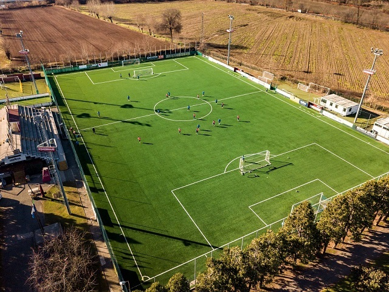
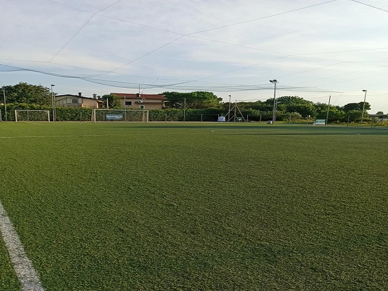
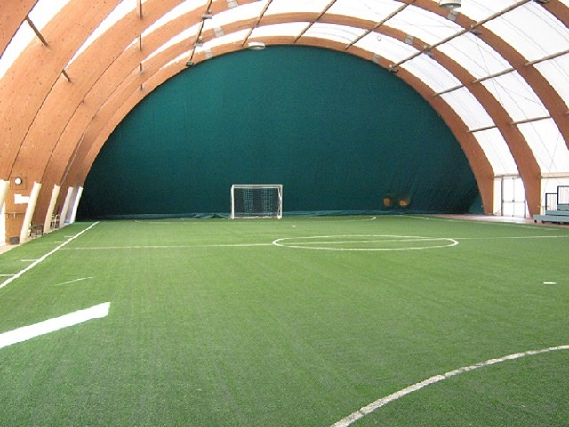

Calcio
Il calcio è lo sport più diffuso in Italia. Centro Sportivo Paolotti mette a disposizione di agonisti e dilettanti impianti di calcio strutture adeguate a ospitare l’attività di scuole calcio per bambini, partite infrasettimanali tra ragazzi o adulti e tornei amatoriali.
La pratica del calcio a 5 è molto diffusa e, per le caratteristiche tecniche della disciplina in sé e quelle che devono avere i giocatori, impegnati a controllare il pallone e a sviluppare azioni in un contesto di dimensioni minori rispetto a quello del calcio a 11, coinvolge l’interesse di molte persone che amano sia giocare a calcio che guardare le partite.
Il campo di calcio a 7 e a 11 sono a disposizione sia di giocatori amatoriali che di squadre vere e proprie che hanno bisogno di allenarsi con costanza per partecipare a competizioni ufficiali.
Per questo motivo è stato realizzato rispettando le caratteristiche che una struttura del genere deve avere per essere fruibile e per durare nel tempo.
Gli impianti calcistici del Centro Sportivo Paolotti sono organizzati in modo da mettere a disposizione di chi pratica un’attività fisica intensa come il calcio tutte le comodità necessarie durante le fasi che precedono e che seguono le partite.
I nostri spogliatoi sono strutturati per accogliere gli sportivi, permettere loro di prepararsi e concentrarsi durante le fasi che precedono un incontro, consentirgli di rinfrescarsi e lavarsi al termine dello stesso.
I nostri campi sono, inoltre, comodi e accoglienti sia per i giocatori che per coloro che li seguono e consentono un funzionale svolgimento dei tornei.
I nostri Campi da calcio


